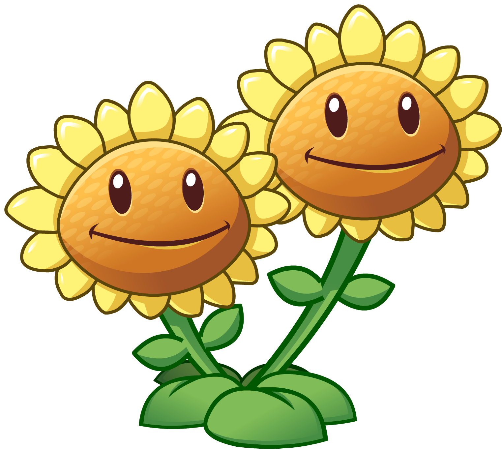
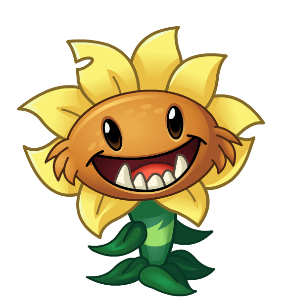
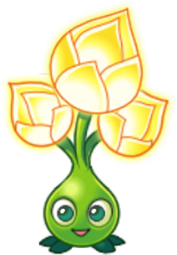

These plants are essential in building the economy. Sun is an important asset in this game, as sun is used to purchase plants to defend against the zombies. Like defensive plants, some of these plants also have other passive\extra activities that help out in the game.
 |
 |  |
 |  | ||
|
SUNFLOWER Sunflowers are essential for you to produce extra sun. Try planting as many as you can!Sun Production: normal Toughness: typical Recharge: fast Cost: 50 |
TWIN SUNFLOWER Twin Sunflowers give twice as much sun as a normal sunflower.Sun Production: double Toughness: typical Recharge: mediocre Cost: 125 |
SUN-SHROOM Sun-shrooms give small suns at first, then normal suns, and finally large suns.Sun Production: small, then normal, then large Toughness: typical Recharge: fast Cost: 25 |
SUN BEAN Sun Beans infect zombies with sun. As a zombie takes damage they generate sun.Area: single Recharge: sluggish Cost: 50 |
GOLD LEAF Gold Leaves create a Gold Tile on planting.Recharge: slow Cost: 50 |
PRIMAL SUNFLOWER Primal Sunflowers pop out large suns instead of regular ones.Sun Production: large suns Toughness: typical Recharge: fast Cost: 75 |
GOLD BLOOM Gold Blooms produce a burst of sun all at once.Toughness: typical Recharge: very slow Cost: 0 |